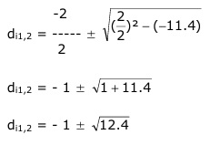

Aufgabe 327 Eine Hohlkugel hat ein Volumen von 40 cm³ und eine Wandstärke s von 1 cm. Wie groß sind die Radien ri und ra? da³ * л di³ * л V = --------- - --------- 6 6 da - di = 2 * 1 cm = 2 cm | +di da = di + 2 Eingesetzt: л 40 = --- * [(di + 2)³ - di³] |*6 6 240 = л * [(di + 2)³ - di³] |:л 240 ----- = [(di + 2)³ - di³ л Unter Anwendung des Pascalschen Dreiecks für (di + 2)³: 240 ----- = di³ + 3 * di² * 2 + 3 * di * 2² + 2³ - di³ л 76,4 = 6 * di² + 12 * di + 8 |-76,4 6 * di² + 12 * di - 68,4 = 0 | :6 di² + 2 * di - 11,4 = 0 p = 2 ; q = - 11,4  di1,2 = - 1 ± 3,52 di1 = - 1 + 3,52 = 2,52 cm --> ri = di/2 cm = 2,52 cm/2 = 1,26 cm di2 = - 1 - 3,52 = - 4,52 keine Lösung, negative Länge ra = ri + s = 1,26 cm + 1 cm = 2,26 cm